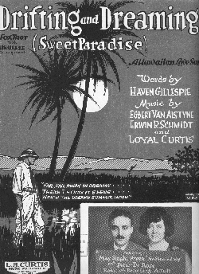

Recorded on
First performance: August 4, 1979, at the Oakland Coliseum Arena. "Lost Sailor" was played in the first set, following the first-ever "Althea", and preceding the set-closing "Deal." It remained in the repertoire through the early part of 1986, then disappeared.
The line has frequently been misconstrued as "Where's the Dark Star?" There's even an entry for this in Skeleton Key, which serves as an opening for a mini-essay, with examples, of the wonderful opportunities for mis-hearing the words of Grateful Dead songs.

The title of a song: "Drifting and Dreaming (Sweet Paradise) (A Hawaiian Love Song)" (1925) words by Haven Gillespie; music by Egbert van Alstyne, Erwin R. Schmidt, and Loyal Curtis.I will spare you all a complete quote of the text, which is of the "Moon, June, spoon" variety.